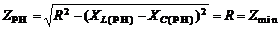
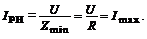
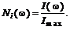
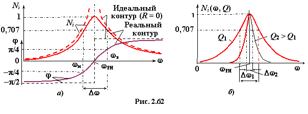

Так как полное сопротивление контура при РН
,
(2.105)
то ток в цепи при резонансе напряжений имеет максимальное значение:

(2.106)
Обычно резонансные кривые контура изображают на графиках в относительных единицах, откладывая, например, ток в долях от тока при резонансе. Отношение тока при любой частоте
к току Imax при РН носит название нормированный ток

(2.107)
Характер изменения нормированного тока Ni в функции от частоты ω представлен на рис. 2.62. Изменение частоты ω вызывает изменение реактивного сопротивления контура Х = XL − XC и тока Ni(ω). Так, при ω −−> 0 сопротивление X −−> ∞ и ток I −−> 0; при ω = ωPH = , X −−> 0 и ток I −−> U/R = Imax; при ω −−> ∞ сопротивление X −−> ∞ и ток I −−> 0. Для идеального контура (R = 0) ток IPH −−> ∞, а угол φ −−> 90° (рис. 2.62а).

Форма кривой нормированного тока Ni зависит от величины добротности Q, причём чем больше добротность Q (меньше сопротивление R колебательного контура при неизменных остальных параметрах схемы), тем более острой (пикообразной) становится форма кривой Ni (ω) (рис. 2.62б).